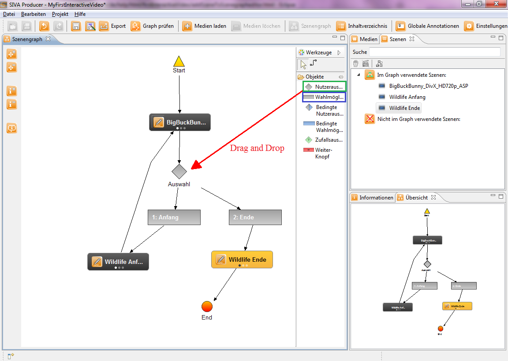

Nun haben Sie die Videos in Szenen unterteilt bzw. umgewandelt, nun gilt es diese in den Szenengrapheditor einzufügen.
Als nächstes werden wir den Szenegraphen soweit mit den Szenen fertig stellen. Dazu ziehen Sie bitte die zwei übrigen Szenen per Drag and Drop in den Szenengrapheditor. Danach ziehen Sie auch eine Nutzerauswahl (grün markiert) und zwei Wahlmöglichkeiten (blau markiert) in den Editor. Anschließend verbinden Sie die erste Szene mit der Nutzerauswahl und die Nutzerausahl mit den beiden Wahlmöglichkeiten. Die erste Wahlmöglichkeit verbinden Sie mit der dritten Szene und die zweite Wahlmöglichkeit mit der vierten. Nun verbinden Sie die dritte Szene mit der Startszene und die vierte Szene mit dem Endknoten. Zum Vergleich betrachten Sie nachstehendes Bild.

Nun ist unser Szenengraph vorerst fertig. Im nächsten Kapitel werden wir lediglich noch zeigen wie Sie eine Annotation einer Szene
hinzufügen.
Klicken Sie bitte hierzu auf den nächsten Menüpunkt "Hinzufügen von Szenenannotationen" im Hilfeverzeichnis auf der
linken Seite oder auf nachstehenden Link:
Hinzufügen von Szenenannotationen